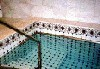

גיור והמרה - הלכה,
דת וזהות חברתית
|
99912 פרופ' צבי זוהר
|
 |
עדכון אחרון: 17/08/2011 21:48
סיכומי שיעור
תשס"ח:
מחברת קורס מצטברת - שירה בוביס
תשס"ו:
מחברת קורס מצטברת - דנה יזרעאלי
תשס"ה:
סיכומי מאמרים
מאמרים למבחן תשס"ה - באדיבות שלום דאר ומסכמים נוספים
מאמרים למבחן תשס"ה - תודה לענבל, קובי ושירן
הכנה למבחן
מבחנים משנים קודמות
תשע"א - מועד א + פתרון בציון 99 - עמיחי מרקס ,